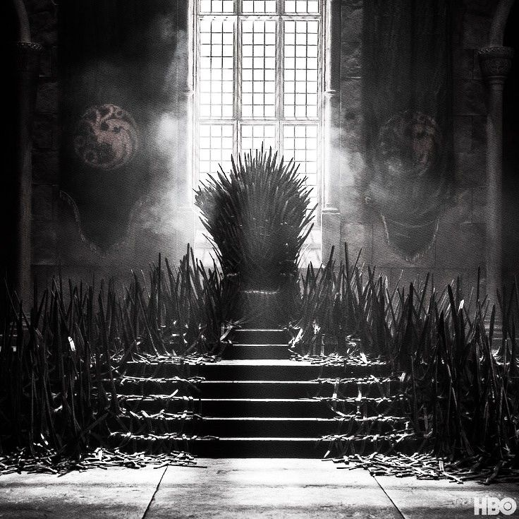

História

O sino de Septo de Baelor ecoou por todo o Porto Real, não para anunciar um casamento ou uma coroação, mas para convocar os senhores de Westeros. A notícia se espalhou como fogo-vivo: o Rei Viserys, a Rainha Alicent e o Príncipe Pródigo Daemon Targaryen haviam partido deste mundo, ceifados por uma praga que nem o fogo dos dragões foi capaz de purificar. Com a morte dos três pilares da coroa, o reino se vê em uma ruptura de poder. As cinzas da sucessão ainda estão quentes. De um lado, os filhos de Viserys com sua amada Lady Aemma – herdeiros de uma linhagem que muitos consideram pura e legítima. Do outro, os filhos de Viserys com Alicent Hightower – criados sob o manto da Fé e da antiga tradição, que reivindicam o Trono de Ferro por direito de sangue e por uma carta póstuma.Uma carta escrita pela mão do velho Otto Hightower,ainda afetado pela mesma praga que ceifou a vida dos pilares de westeros,jura ter ouvido o último suspiro do Rei. Nela, Viserys teria mudado de ideia em seu leito de morte, nomeando o herdeiro de Alicent como seu sucessor. Mas a fumaça das palavras não convenceu a todos. Os senhores mais antigos lembram-se do juramento feito há anos, e as vozes de legitimidade se dividem.Com a morte de Otto Hightower,o reino está à beira da guerra. Os dragões rugem em seus montes, aguardando ordens. As alianças são tecidas nas sombras, e as adagas estão sendo afiadas em todos os cantos. Para evitar que o sangue dos Targaryen manche as ruas de Westeros, a proposta foi feita: um Grande Concelho. Não para escolher um rei entre os senhores, mas para decidir, de uma vez por todas, qual dos filhos de Viserys tem o direito de se sentar no Trono de Ferro.Mas o Grande Concelho é uma faca de dois gumes. Em meio a discursos, provas e acusações de traição, cada voto pode ser a última gota de veneno ou a chama que salva o reino. Bem-vindos ao centro do jogo. As casas estão se posicionando. As alianças serão testadas. E o fogo sempre dança. O que vocês farão quando a verdade for apenas uma questão de perspectiva?